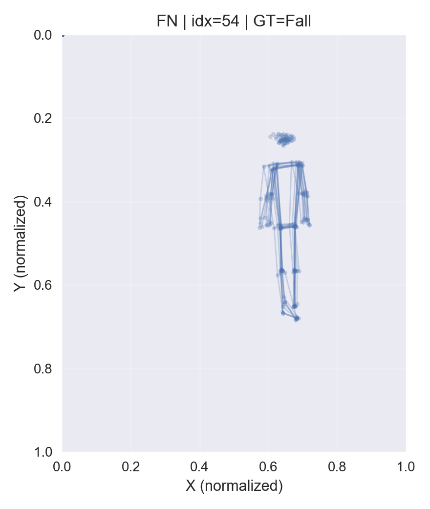
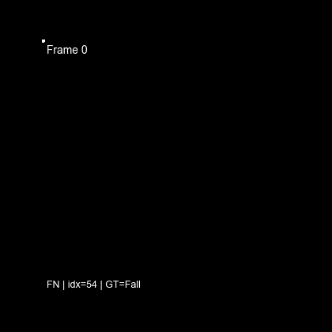
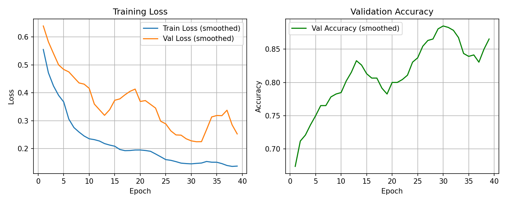
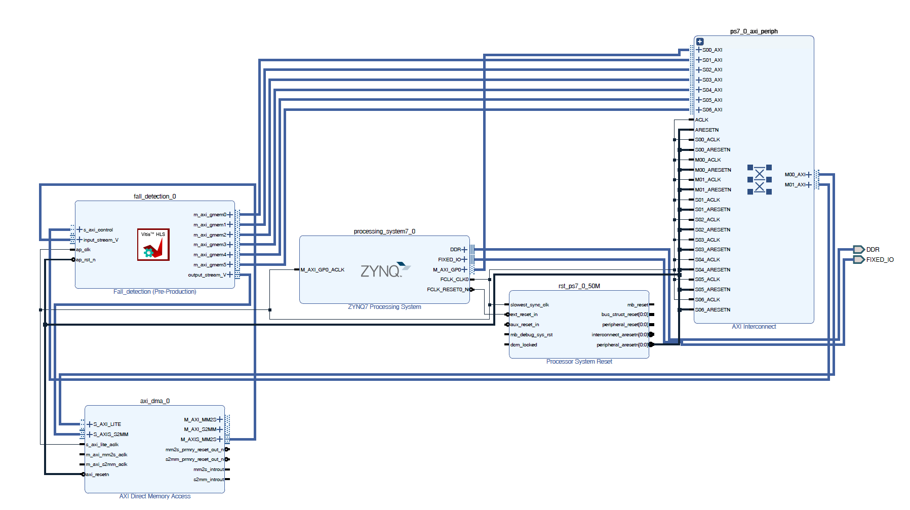
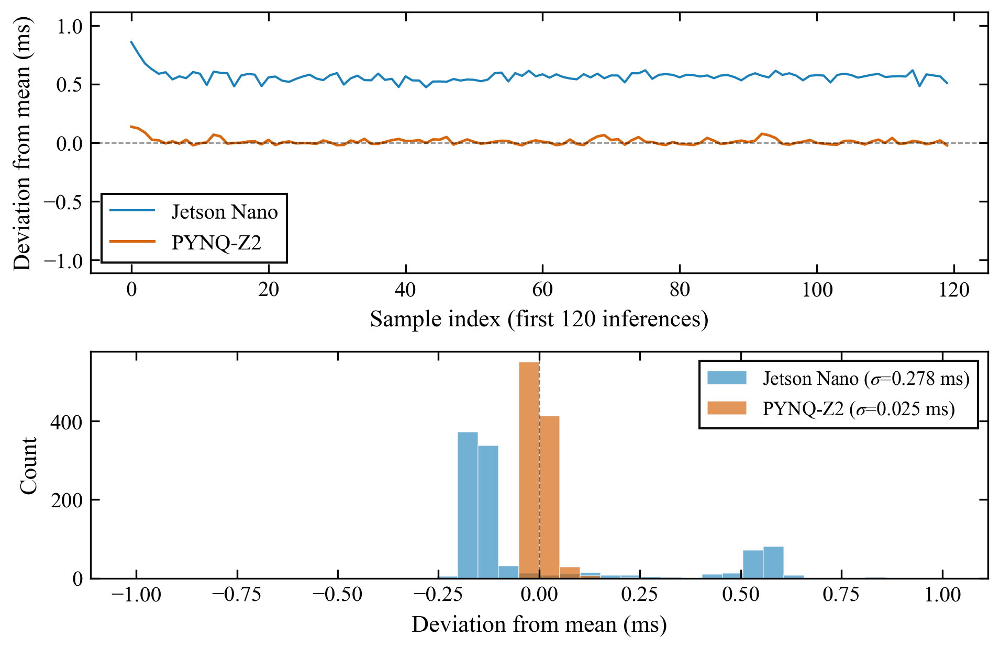
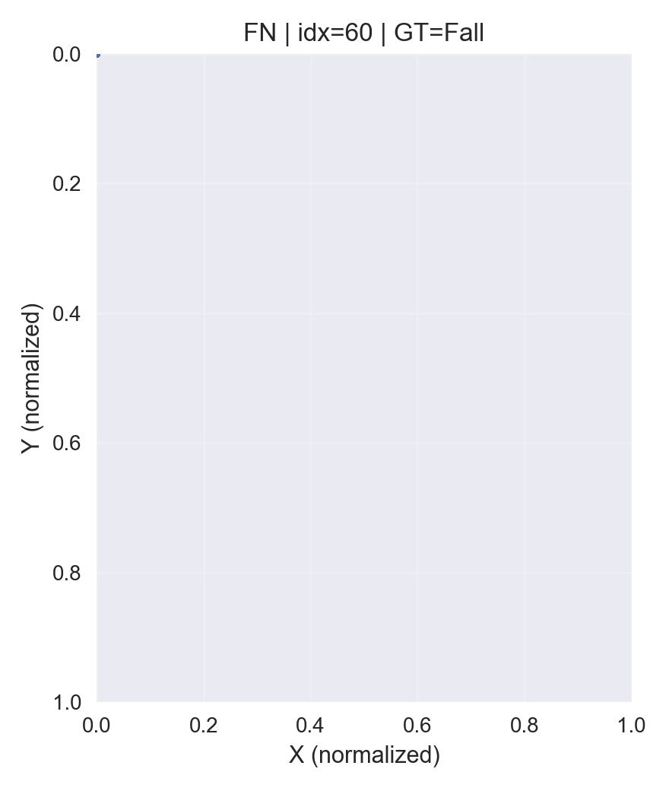
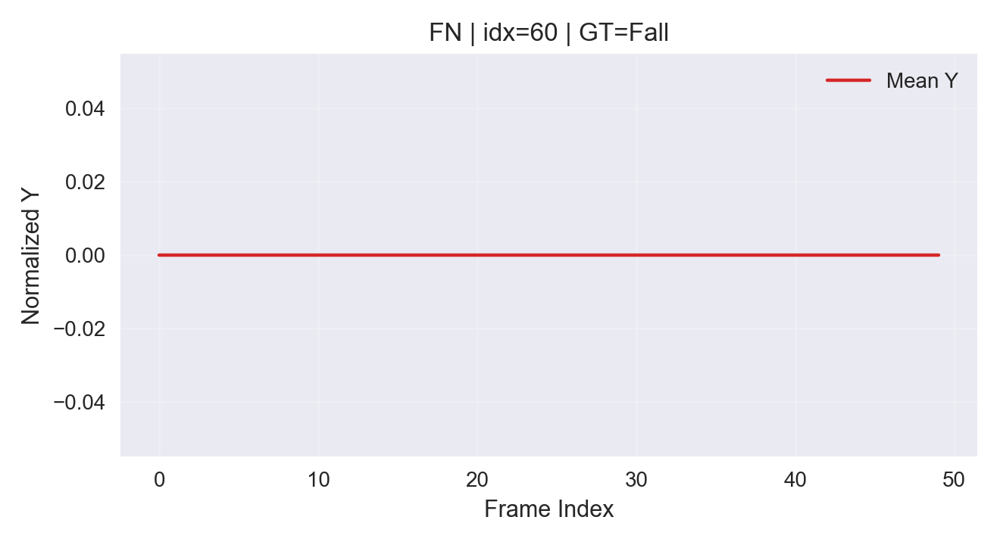
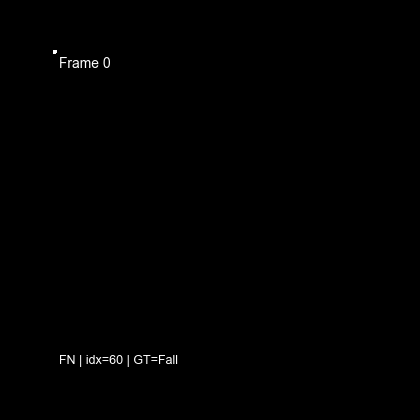
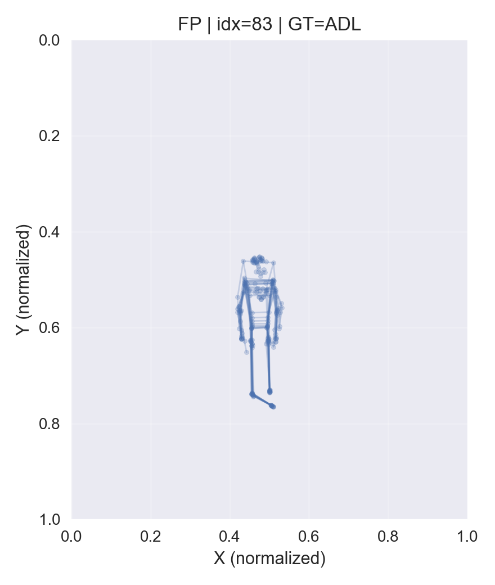

標籤雜訊 · FN #54
該片段多為站立姿態……


Project 03 · Skeleton Fall Detection · Co-Design
Using a single camera to extract human skeletons, a tiny temporal convolutional network classifies fall vs. normal activity. The same model was deployed on PC, Jetson Nano, and FPGA (PYNQ-Z2) to validate feasibility, real-time performance, and accuracy on edge devices.
這個題目的起點，其實來自專題二（DST-FallNet 多模態跌倒偵測）的實戰經驗……
這不只是學生專題才會踩到的問題……
因此專題三想換一個問法……
專題三刻意與「把分類準確率刷到 SOTA」分道揚鑣……
這不代表準確率可以忽略……
相對地，主要貢獻落在架構與方法……
設計一個「硬體友善」的跌倒偵測模型……
專題一開始的直覺很單純：在邊緣硬體上做跌倒偵測，最好還能「上 FPGA」證明硬體價值。但真正動手後才發現，難點很少是某一個公式，而是每一步都要決定先驗什麼、後驗什麼——先讓軟體閉環可重現，再談跨平台比較；先確認模型能被量化與匯出，再談硬體加速；當 DPU 在 PYNQ-Z2 上走不通時，願意把問題改寫成「訂製加速器能證明什麼」，而不是硬撐一條黑盒路線。
因此這個專題的敘事不是「一開始就設計完美系統」，而是沿時間推進的策略調整：每個階段都留下可對照的產物（固定測試集、ONNX、CSV、bitstream），讓後面的結論能回頭被檢驗。下面依實際開發順序整理心路與策略，對應到後文各章節的技術細節。
整體策略可以概括為「先軟後硬、先基準後對照、先誠實量測後下結論」。不一次把所有平台做完，而是每完成一階段就凍結產出，避免後面的實驗無法回頭比對。
階段一 · 問題定義
在 URFD 跌倒場景下，先排除穿戴式與大型 CNN 兩條極端路線，改以 MediaPipe 抽骨架、用 1D-CNN 看時間變化。這一步的關鍵不是追 SOTA，而是預留 FPGA 可實作性：輸入固定、運算規律、參數量可控。模型從訓練第一天就採 ReLU6、無 Dropout、無 Conv bias，等於同時為軟體準確率與硬體綜合鋪路。
階段二 · 軟體閉環
完成抽骨架 → 訓練 → 固定 20% 測試集（seed=42）→ 匯出 deploy ONNX → INT8 量化（Delta = 0）。在進 Jetson 或 FPGA 之前，PC 端先跑通消融（跳幀 Stride 1–16）與瓶頸剖析。策略重點：任何跨平台數字都必須指向同一份模型與同一份測試集，否則比較沒有意義。
階段三 · 邊緣基準
將 ONNX Runtime 部署到 Jetson Nano 2GB，量測端到端 FPS 與 jitter。這一階段踩到 MediaPipe 裝不起來、CRLF 腳本、影片輸出異常等整合問題——解法改為 PC 離線抽骨架、Jetson 只跑推論。心路轉折：邊緣 AI 的時間常花在環境與資料格式，而非模型本身；這也預告了後續 profiler 的發現：pose_extract 佔約 96.71%。
階段四 · 路線轉彎
原本規劃 Vitis AI + DPU，但 Zynq-7020 資源撐不住完整 IP。與其降規硬塞黑盒加速器，策略改為訂製 HLS 1D-CNN IP：只加速最關鍵的卷積、用 AXI-DMA 串接、權重從同一份 deploy ONNX 萃取。這是專題最重要的協同設計決策——模型結構為硬體而簡化，硬體任務也為模型而縮小，而非通用 AI 加速器套用。
階段五 · 上板定案
PYNQ-Z2 上依序完成準確率（92.39%）、吞吐量（~60 FPS）、延遲抖動（Std ≈ 0.028 ms）量測，並誠實揭露 DMA 佔 16.62 ms 中的絕大部分、IP 計算僅 ~0.41 ms。開發策略收尾：不宣稱 FPGA 讓端到端變快 10 倍，而是論證其在確定性、低抖動與可預測延遲上的價值——這與 Jetson 軟體推論形成互補對照，而非單純數字競賽。
這份專題在現階段仍有大量顯而易見的系統問題與架構缺陷……
整個系統是一條清楚的資料流……
從資料準備到硬體上板，專題依序完成下列階段。每一階段的產出都保留成可重現的檔案（.npy、.onnx、weights.h、實驗 CSV），目的是保證實驗的可重複性……


資料來源為 URFD 公開跌倒資料集……
本專題的模型從未直接吃原始像素……
x_data.npy（約 460 筆 × 36 × 50）與 y_labels.npy。以 seed=42 隨機切出 20% 固定測試集 → test_data.npy / test_labels.npy（92 筆），後續 PC、Jetson、FPGA 準確率實驗全部共用這 92 筆，避免各平台各切一份導致數字不可比。calibration_data.npy（128 筆），供 ONNX Runtime INT8 量化校準。實測量化後準確率與 FP32 相比 Delta = 0，證明資料前處理與模型設計對量化友善。.npy 做純推論；FPGA 上板則將測試集轉為 INT8 的 test_data_int8.npy，並以 pc_reference.csv 比對預測一致率——資料格式從訓練到硬體一路對齊。x_data.npy / y_labels.npy — 全量骨架樣本與標籤test_data.npy / test_labels.npy — 固定測試集（92 筆）calibration_data.npy — INT8 量化校準（128 筆）test_data_int8.npy — FPGA 上板推論輸入pc_reference.csv — PC ONNX 參考預測，供 FPGA 一致率比對三個理由：隱私（不保存原始影像，只留骨架座標）、可重現（同一批 .npy 可反覆訓練與量測）、跨平台（Jetson 裝不起 MediaPipe 時仍能驗證模型推論）。代價是端到端 FPS 會被前處理主導——這也是後文瓶頸分析的重要前提。
開發基準：訓練、ONNX 匯出、消融實驗與瓶頸剖析的參考平台，提供最高吞吐的對照組。
邊緣軟體部署：在資源受限的 ARM + GPU 環境驗證 ONNX Runtime 推論，觀察 OS 排程對即時性的影響。
硬體加速器驗證：以 Zynq-7020 實作訂製 1D-CNN IP，強調確定性延遲、低功耗與可預測的推論行為。
模型本身刻意保持簡單……

跌倒的關鍵資訊在於「骨架隨時間的變化」……
模型以 PyTorch 實作，輸入形狀 (N, 36, 50)，輸出二分類 logits。訓練完成後匯出 fall_model_float32.onnx 作為所有平台的統一部署基準；再以 128 筆校準樣本做 INT8 量化，產生 fall_model_int8.onnx 供邊緣推論與 FPGA 權重萃取使用。
訓練以驗證損失（val_loss）為早停依據……

專題中段遇到一個關鍵岔路……


這張圖是 PYNQ-Z2……
| 做法 | 取捨 |
|---|---|
| 通用 DPU IP | 指令解碼、排程開銷大，對極輕量 1D-CNN 不划算 |
| 純 CPU（Jetson） | 延遲抖動較大，不利硬即時場景 |
| HLS 客製 IP | 針對 (1, 36, 50) → (1, 2) 量身設計，資源與延遲可控 |
載入 bitstream、準備輸入、啟動 DMA、讀回結果；透過 M_AXI_GP0 存取 PL 端 IP。
MM2S 把 DDR 中的 36×50 特徵送到 HLS IP；S2MM 把 2 維 logit 寫回 DDR。Stream 寬度 8 bit，與 ap_fixed<8,4> 對齊。
核心加速器：s_axi_control 控制、AXI-Stream 輸入/輸出（輸出帶 TLAST）、m_axi_gmem0~5 從 DDR Burst Read 權重至 BRAM。
匯流排交換器，連接 PS、DMA 控制埠與 HLS 的 6 條 m_axi，共享 HP0_DDR_LOWOCM 存取 DDR。
由 PS 的 FCLK_CLK0（50 MHz）產生 PL 同步重置。
input_stream_V（1800 bytes）output_stream（TLAST=1）送回 DMADDR 輸入 buffer ──MM2S──► fall_detection_0 ──S2MM──► DDR 輸出 buffer；權重經 m_axi 從 DDR 讀入。硬體計算 ~0.41 ms，端對端 ~16.62 ms 多半花在 DMA 搬移。
FPGA 端不重新訓練模型，而是沿用 PC 上匯出的 deploy ONNX，確保軟硬體比對有單一真實來源（Single Source of Truth）。完整流程如下：
fall_model_float32.onnx 產生 weights.h（INT8 定點權重）pc_reference.csv 作為一致率基準軟體端（PS）負責影像 I/O 與 MediaPipe 骨架擷取，屬於非確定性、OS 排程主導的路徑；硬體端（PL）只負責收到 INT8 骨架序列後的 1D-CNN 推論，提供固定延遲、可重複的計算行為——這正是本專題在邊緣場景想驗證的價值。
頂層函式 fall_detection()（Vitis HLS）刻意對應 PyTorch / ONNX 的每一層，讓硬體資源用在刀口上。
ap_fixed<8,4> 取代浮點，對應軟體端 INT8 量化。hls::stream 串接，內層迴圈每週期啟動一次。| Bundle | 內容 |
|---|---|
gmem0 | Conv1 權重 |
gmem1 | Conv1 偏置 |
gmem2 | Conv2 權重 |
gmem3 | Conv2 偏置 |
gmem4 | FC 權重 |
gmem5 | FC 偏置 |
權重由 extract_weights_from_deploy_onnx.py 從 deploy ONNX 導出，編入 weights.h。
| 資源 | 使用率 | 說明 |
|---|---|---|
| DSP48 | 100%（220/220） | 卷積乘加主要由 DSP 承擔 |
| BRAM | ~28%（39/140） | 權重 buffer、特徵圖暫存 |
| LUT | 綜合偏高 | 實作後 opt_design 通常會下降 |
| FF | ~49% | 暫存器 |
階段一（軟體）：訓練硬體友善 1D-CNN · ReLU6 · INT8 量化 → 階段二（Jetson）：邊緣基準 · 瓶頸分析（骨架擷取 ~97%）→ 階段三（FPGA）：design_1 = HLS IP + DMA + Zynq 整合。實測上板準確率 92.39%，Jitter Std 0.028 ms，驗證協同設計在邊緣平台上的可行性——詳見 06 實驗結果。
把一個模型從 PC 一路推到 FPGA……
板子資源不足以承載完整 DPU IP……
Jetson 環境無法安裝 mediapipe……
Windows 換行讓 Jetson 出現錯誤……
畫面被拉伸、播放速度異常……
比較腳本找不到對應設定的資料……
剖析後發現骨架擷取佔了端到端 96% 的時間……
上板後發現單次推論 16.62 ms 中，S2MM 傳輸約佔 16.11 ms，IP 計算僅 ~0.41 ms。這說明記憶體 I/O 才是 FPGA 端的真正瓶頸，而非卷積本身。
FN / FP 多發生在遮擋、蹲坐與跌倒動作相似、或骨架關鍵點缺失的片段。需要結合視覺化疊圖與 GIF 才能向論文讀者清楚說明錯誤原因。
整個專題由六組獨立實驗構成，分別量測 Jetson 與 FPGA 的吞吐、抖動與準確率。它們共用同一份模型與固定測試集，因此數字可以互相對照。
| 實驗 | 平台 | 量測 | 關鍵結果 |
|---|---|---|---|
| E1 | Jetson Nano | 宏觀吞吐 | ~18 FPS |
| E2 | Jetson Nano | 延遲抖動 | Std ~0.28 ms |
| E3 | Jetson Nano | 準確率 | 95.65% |
| E4 | FPGA PYNQ-Z2 | 吞吐量 | ~60 FPS |
| E5 | FPGA PYNQ-Z2 | 延遲抖動 | Std ~0.028 ms |
| E6 | FPGA PYNQ-Z2 | 準確率 | 92.39% |
| E7 | Jetson Nano | 僅推論吞吐 | ~1010 FPS |
E7 特別說明問題核心：模型本身每秒可跑上千次，但端到端只有 ~18 FPS——慢的是前處理而非模型，這也是下方瓶頸分析的伏筆（Amdahl 定律）。
很容易誤會「PC > Jetson > FPGA」是效能排名。其實 PC 與 Jetson 量的是完整端到端（解碼 → MediaPipe → 推論），而 FPGA 量的是固定骨架測試集的推論正確性與延遲，刻意跳過前處理。所以 FPGA 的目的不是解決 96% 的骨架擷取瓶頸，而是驗證協同設計的正確性與硬體的確定性——它與 Jetson 是互補關係，不是同一把尺。
以下準確率與量化數字在專題三中的角色是可行性驗證……

| 指標 | 數值 |
|---|---|
| Accuracy | 95.65% |
| Precision | 93.33% |
| Recall | 93.33% |
| F1-score | 93.33% |
INT8 量化後準確率維持 95.65%……
以 Fall 為正類，固定測試集（92 筆）上的 FNR 為 0.0667，代表多數跌倒事件能被正確捕捉。FPGA 上板準確率為 92.39%（85/92），與 PC ONNX 參考之間的落差主要來自定點量化與 DMA 傳輸鏈路的累積誤差，仍在可接受範圍內。

透過「跳幀」可以用準確率換取速度……

把端到端流程拆成五個階段後……
| 階段 | 平均耗時 | 占比 |
|---|---|---|
| read_decode | 0.69 ms | 2.02% |
| pose_extract | 33.06 ms | 96.71% |
| preprocess | 0.016 ms | 0.05% |
| inference | 0.42 ms | 1.22% |
| postprocess_draw | <0.001 ms | ~0% |
這個發現很重要……


| 平台 | 模型推論延遲 | 推論 FPS | 特性 / 優勢 |
|---|---|---|---|
| PC (CPU) | ~0.42 ms | ~191 （端到端） | 高吞吐，但高功耗、延遲不確定 |
| Jetson Nano 2GB | ~0.42 ms | ~18 （端到端） | 易開發，受 OS 排程影響 |
| FPGA (PYNQ-Z2) | 0.41 ms（IP）/ 16.62 ms（含 DMA） | ~60.25 | 確定性延遲、低功耗、即時性 |
值得注意的是，FPGA 上 16.62 ms 的延遲中……
PC 在 Stride=1、No-Draw 設定下端到端 FPS 約 190.61，Jetson 約 18.11——差距主要來自骨架擷取與解碼在嵌入式 CPU 上的負擔，而非 1D-CNN 本身（兩者模型推論皆約 0.42 ms）。這也呼應了前述瓶頸分析：若要提升實際體感速度，應優先優化 MediaPipe 或改為預先離線抽骨架，而非一味加大模型加速器。
不同平台的延遲數字其實量的是不同東西，直接比絕對值會誤導。真正反映架構差異的不是延遲大小，而是延遲的穩定度（Jitter）。
| 指標 | Jetson | FPGA | 量的是什麼 |
|---|---|---|---|
| 核心推論延遲 | ~1.3 ms | ~0.41 ms（IP） | 算一次 forward 要多久 |
| 系統單幀延遲 | 1–4 ms 波動 | ~16.6 ms 穩定 | 一幀完整走完推論 |
| 抖動（Jitter, Std） | ~0.28 ms | ~0.028 ms | 延遲的穩定度 |
以下圖表在同一模型、同一固定骨架測試集、純推論路徑下……

關鍵結論：FPGA 單幀延遲含 DMA 看似較大，但抖動只有 Jetson 的約 1/11……
檢視模型判斷錯誤的案例……
在 92 筆測試樣本中，共標記 4 筆具代表性的錯誤案例……
把四筆錯誤歸納起來，其實對應到跌倒偵測領域的三種典型成因，而且大多不是分類器本身的缺陷：
該片段多為站立姿態……


幾乎抽不到關鍵點……



兩筆都是「準備坐下」的動作……


這個專題完整走過了全流程……
學到的不只是「怎麼把模型變小」……